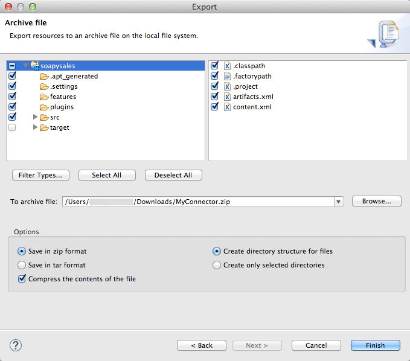
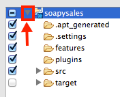

Packaging Your Connector for Release
When your connector is ready for release to a broad audience, take the following additional steps to ensure user success:
-
Create a license agreement for your connector.
-
Develop end-to-end walkthroughs to illustrate performing common use cases with your connector.
-
Create a compressed file for distribution.
Prerequisites
This document assumes you have:
-
Developed your connectors
-
Documented them in preparation for their release. Additional information about documenting your connector is provided in Documenting With Use Cases.
-
Completed testing as described in Developing DevKit Connector Tests.
Customize License Agreement
During connector installation, Studio presents you with a license agreement. You can customize the contents of this agreement to reflect your terms and the wording you want for your connector license.
Maven first searches for a LICENSE.md file in the same directory as the pom.xml file during the build process.
If this file is not found, Maven goes through the following steps to locate a license agreement:
-
Maven checks for a
LICENSE.txtfile in the same directory as thepom.xmlfile. -
If the
pom.xmlfile contains a Licenses section (as described in the Maven documentation), the DevKit attempts to to download the text from the license’s URL, then saves the downloaded content as a newLICENSE.mdfile. -
If no license text is found by the above steps, the build fails.
In addition to the global license file, the DevKit requires that your source files also contains a license header. To apply the license header to every source file in your project, run the following command in a command console at the root of your project, which contains your connector project’s pom.xml file:
mvn license:formatThis command goes through your whole project and applies the license header defined in the LICENSE_HEADER.txt file to each source file. This includes Java files, SQL scripts, XML files, and more.
Run the following command to install your connector with your updated license information into your local Maven repository.
Important: Run mvn license:format before running this Maven install command because Maven verifies the license headers first before installing:
mvn clean installTo enable verbose logging, use:
mvn clean install -Ddevkit.verbose.logging=trueYou can also use the following Maven command to package the connector instead of installing. This creates an update site that you can use to install the connector in Anypoint Studio. This update site contains everything you need to use the connector inside your Mule applications (icons for the palette, XSDs, source files, etc.) Therefore it is important that your source files have the license headers before packaging.
Note: Packaging the connector does not check for license headers in your source files. To package your connector, run the following command at the root folder:
mvn clean packageCreating a Compressed Project File
To create a compressed file of your project:
-
In Anypoint Studio, right-click your project name in the Package Explorer, and click Export.
-
Click General > Archive File with these settings. Choose whether you want a TAR file (for Linux or Mac) or a ZIP file for Mac or Windows. (Windows users can also uncompress TAR files using third-party software such as 7zip.)
Important: Uncheck the target folder. -
Click the down arrow next to your project name and unclick target:
 -
Click Browse in To archive file and choose the name and location of the zip or tar file.
-
Click Finish to create the compressed file.
Documenting With Use Cases
Before releasing your connector, document your connector effectively. Useful documentation can help reduce your support and training costs, as well as improving customer satisfaction.
Documentation tips:
-
Readme - Provide a Readme file that customers can readily access. The best Readme file appears automatically during installation, such as part of an installation wizard. The Readme needs to contain installation information and explain any required software that customers need to install or configure first before they can install your connector.
-
Use Cases: Explain why, when, and how a customer uses your connector. For each use case, provide examples with explanations. For information, see Wikipedia’s Use Case topic.
-
Release Notes: Ensure your connector is versioned and that you help customers understand what changes between releases. We recommend that you list new features, known issues, and what issues were fixed.
Certify and Publish Your Connector
MuleSoft’s program certifies and publishes third party connectors to be distributed to the community on mulesoft.org. For more information about this program, contact us.
Uploading your Connector to Exchange
Anypoint Studio identifies each connector by a Feature ID that spans all versions of the connector. In order to expose your connector via the Anypoint Exchange, you will be prompted by the Exchange to provide this Feature ID when uploading your connector asset, as well as a version number.
Follow the steps below to obtain this ID:
-
Unzip the file containing your connector’s Update Site
-
In the created folder, look for the
context.xmlfile and open it with a text editor -
In this file, search for a string that follows the following pattern:
id=’org.mule.tooling.ui.extension.<connector name>.feature.group’. That entire value is your connector’s Feature ID. As a more concrete example, your Feature ID could be something like ’org.mule.tooling.ui.extension.cloudhub.3.6.0.feature.group’
In this same context.xml file you will find a tag named version next to the Feature ID. Provide this value in the Connector Version field in Exchange. Consumers will later only see a beautified and simpler version number. For example if the version number you provide is 2.0.1.201606101417, they will just see 2.0.1. The full version number will be displayed ONLY when are editing a specific version.